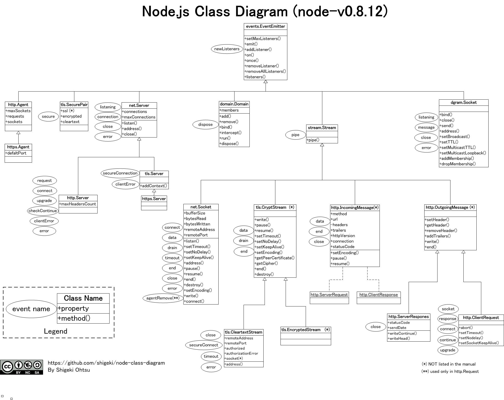
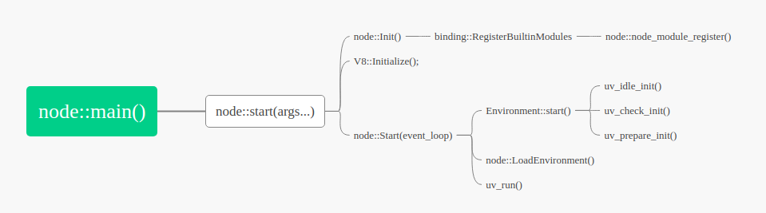

调整一下学习的顺序，从先看libuv，再看node.js。
- v8引擎
- libuv
- node.js <=
本文是本系列最后一篇，先来看看node.js的一些api，然后稍介绍一下node.js的源码。
主要参考：官网
node.js的api

这张图的node版本是v0.8.12，当下最新的版本是v13.3.0，增加了很多新的类，但核心EventEmitter、stream、net.Server、net.Socket、dgram.Socket、http系列的已经在图中了。这里只对主要的几个类进行简单的介绍。
EventEmitter
EventEmitter是大部分node类的父类，也体现了node的异步理念。
最主要的接口是：
on(eventName, listener)
将listener添加到event的listener最后，如果第一个可以任务是注册。emit(eventName[, …args])
异步调用eventName的每一个listenerseventNames()
返回注册的所有eventlisteners(eventName)
返回eventName的全部listeners
Stream
stream再libuv中也已经介绍过，是node.js的第二大概念。将很多稳定的数据当做流来处理，如基于tcp的网络数据以及fs等。
包括：只读流readable、只写流writable、双向流duplex等内容,duplex = readble + writable
stream与Buffer往往是连用的，本质是读取的数据都是二进制流，只不过可以转换成string或者object
readable
2个event: readable vs data
1个function: read([size])readable vs data
在api中并没有说明这两个事件的差异，stackoverflow中有比较好的解释：
The ‘data’ example calls your function with a chunk, and you have no choice but to handle it, or else it will be lost forever. In the ‘readable’ example, the function tells you that data is available, but you can read it at any time. This allows the underlying system to know whether or not you have dealt with the data yet so it is very simple to support a concept called backpressure.
For example, in a networked stream, if a client is sending data over a TCP connection to a server and the server is super busy, it will receive readable events, but it could choose to wait to read the data until it actually has the resources to deal with the data. By not reading the data, the stream will buffer it and as that buffer approaches a maximum size, the stream will stop reading packets from the operating system to avoid taking up too much RAM. Then the operating system will start dropping packets, and since the packets were dropped, the client that is sending the data will reduce the speed at which it is sending data to try to make fewer packets drop.
这也解释了官方说的：data是将一chunck数据的控制权交给用户。
read([size])
如果size不写，在内部缓存中的数据会全部返回
writable
- drain 事件 与 write()函数
写失败后，当可以再次写入的时候，会发送drain事件，通知写端继续write
- drain 事件 与 write()函数
net
net.Server
net.Server是从EventEmitter派生
主要的接口
listening事件
该事件可以认为是server开张的事件connect事件
当有新连接创建时，该事件就触发了。对比开张事件，这是接到客的事件net.createServer()函数
创建server的函数server.listen()函数
server.listen([port[, host[, backlog]]][, callback])1
2
3
4server.listen({
host: 'localhost',
port: 80,
});
net.Socket
socket与server连用，socket是server接到的客，它是从Duplex stream派生而来，也就继承了stream的data事件与drain事件，write()、read()函数，另外主要的事件还应该包括
connect事件
代表连接的成功建立close事件
连接的断开connect()函数
socket.connect(port[, host][, connectListener])
这里的的connectListener回调，可以看做是connect事件的listenerend()函数
socket.end([data[, encoding]][, callback])
半关闭socket，如果传递的data，可以认为是先write()data，然后再end()
http
http.Server
http.server 从 net.Server派生
request事件
与tcp的connect事件不同，这里“来客”的事件是:requestupgrade事件
比如，http升级成websocket的使用clientError事件
1
2
3
4
5
6
7
8
9const http = require('http');
const server = http.createServer((req, res) => {
res.end();
});
server.on('clientError', (err, socket) => {
socket.end('HTTP/1.1 400 Bad Request\r\n\r\n');
});
server.listen(8000);
http.ClientRequest
ClientRequest是一个http的客户端，它包含了Socket，另外也包含了http协议的Header等内容。
http.request() 进行创建
connect事件
与server连接成功之后，会emit该事件request.setHeader() 与 request.getHeader()
1
2
3
4
5
6
7
8
9request.setHeader('content-type', 'text/html');
request.setHeader('Content-Length', Buffer.byteLength(body));
request.setHeader('Cookie', ['type=ninja','language=javascript']);
const contentType = request.getHeader('Content-Type');
// 'contentType' is 'text/html'
const contentLength = request.getHeader('Content-Length');
// 'contentLength' is of type number
const cookie = request.getHeader('Cookie');
// 'cookie' is of type string[]request.Socket()
虽然是socket，但这里的socket是http协议下的socket，不会发送‘readable’事件。request.write()
写数据示例：
1
2
3
4
5
6
7
8
9
10
11
12
13
14
15
16
17
18
19
20
21
22
23
24
25
26
27
28
29
30
31
32
33
34
35
36
37
38
39
40
41
42
43
44
45
46
47
48
49
50
51
52const http = require('http');
const net = require('net');
const { URL } = require('url');
// Create an HTTP tunneling proxy
const proxy = http.createServer((req, res) => {
res.writeHead(200, { 'Content-Type': 'text/plain' });
res.end('okay');
});
proxy.on('connect', (req, cltSocket, head) => {
// Connect to an origin server
const { port, hostname } = new URL(`http://${req.url}`);
const srvSocket = net.connect(port || 80, hostname, () => {
cltSocket.write('HTTP/1.1 200 Connection Established\r\n' +
'Proxy-agent: Node.js-Proxy\r\n' +
'\r\n');
srvSocket.write(head);
srvSocket.pipe(cltSocket);
cltSocket.pipe(srvSocket);
});
});
// Now that proxy is running
proxy.listen(1337, '127.0.0.1', () => {
// Make a request to a tunneling proxy
const options = {
port: 1337,
host: '127.0.0.1',
method: 'CONNECT',
path: 'www.google.com:80'
};
const req = http.request(options);
req.end();
req.on('connect', (res, socket, head) => {
console.log('got connected!');
// Make a request over an HTTP tunnel
socket.write('GET / HTTP/1.1\r\n' +
'Host: www.google.com:80\r\n' +
'Connection: close\r\n' +
'\r\n');
socket.on('data', (chunk) => {
console.log(chunk.toString());
});
socket.on('end', () => {
proxy.close();
});
});
});
创建了一个http代理，用req与代理连接，然后发送数据
http.ServerResponse
由server创建的对象，在request事件的监听回调中，作为第二个参数。
这是用来与requestClient进行通信用的。
- response.setHeader(name, value)
- response.getHeader(name)
- response.write(chunk[, encoding][, callback])
- response.end([data[, encoding]][, callback])
http.IncomingMessage
这个server接到的客，属性包括：
- message.headers
- message.httpVersion
- message.method
message.rawHeaders
原始的头，并不是键值对形式的，而是在一个list中的1
2
3
4
5
6
7
8
9
10
11// Prints something like:
//
// [ 'user-agent',
// 'this is invalid because there can be only one',
// 'User-Agent',
// 'curl/7.22.0',
// 'Host',
// '127.0.0.1:8000',
// 'ACCEPT',
// '*/*' ]
console.log(request.rawHeaders);
fs
- fs.open(path[, flags[, mode]], callback)
fs.openSync(path[, flags, mode])
fs.opendir(path[, options], callback)
fs.opendirSync(path[, options])
fs.readdir(path[, options], callback)
fs.readdirSync(path[, options])
fs.readFile(path[, options], callback)
fs.readFileSync(path[, options])
fs.writeFile(file, data[, options], callback)
fs.writeFileSync(file, data[, options])
fs.close(fd, callback)
- fs.closeSync(fd)
node.js源码节选赏析
启动

internal模块
internal模块是在init过程将模块注册到V8的堆栈中:
每个internal模块都有一个Initialize()函数，通过Envirment::SetMethod()注册成V8的Funtion Template，用于js代码来调用。
1 | inline void Environment::SetMethod(v8::Local<v8::Object> that, |
每个模块的最后都有NODE_MODULE_CONTEXT_AWARE_INTERNAL(<模块名>, 模块的Initialize函数)，
这个宏定义是再node_binding中定义的。
1 |
|
1 |
|
通过宏定义，将创建了一个NM_F_INTERNAL类型的模块，声明了register<模块名> 的注册函数，先来看看这个注册函数：
1 | static node_module* modlist_internal; |